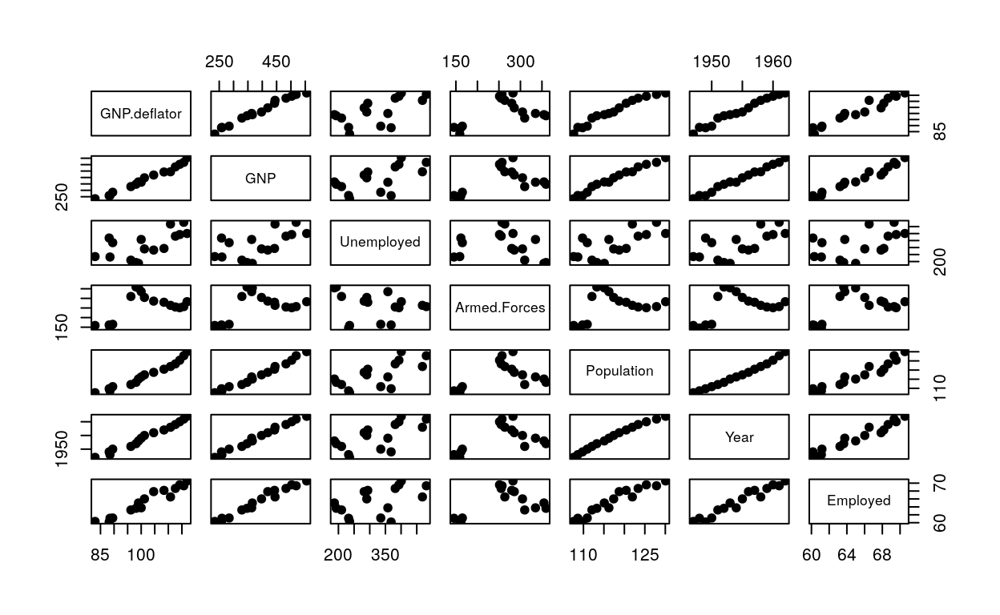
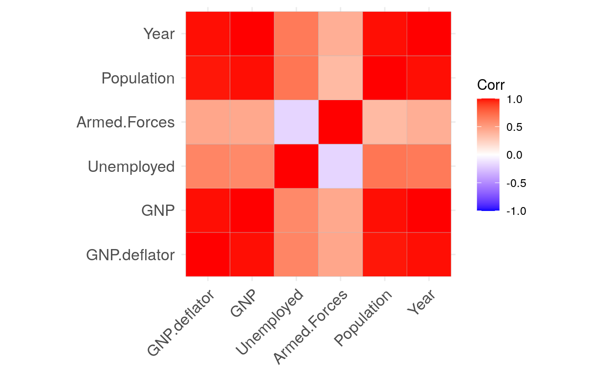
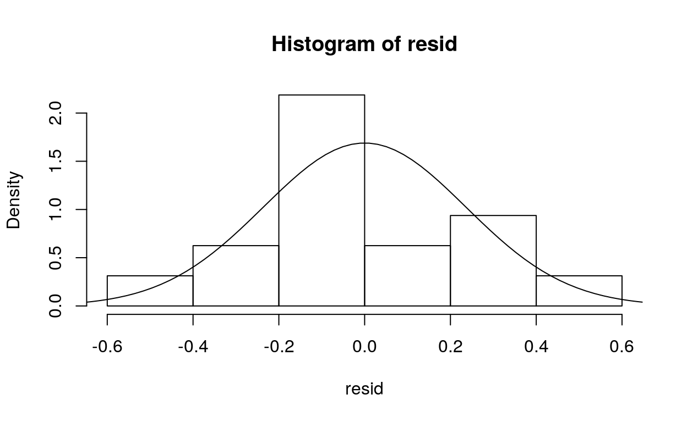
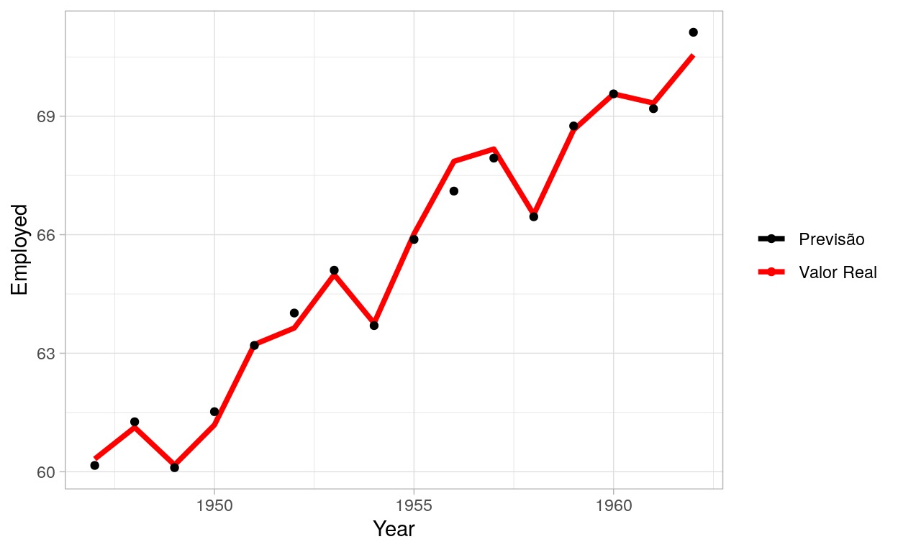

Criando um modelo de Regressão Linear Múltipla do zero no dataset Longley e verificando as premissas do modelo.
Métodos de regressão são utilizados para inferir a relação de variáveis independentes com um variável dependente. Entre os métodos de regressão um dos mais conhecidos e básicos é o modelo de regressão linear. A regressão linear é chamada múltipla quando é aplicada utilizando mais de uma feature para prever a variável de interesse (target).
Nesse post vamos ver como “criar” um modelo de regressão múltipla do zero no R, avaliar a regressão e testar as premissas do modelo. Fazer uma regressão linear no R é muito mais simples utilizando as funções prontas da linguagem, mas o modelo é criado do zero como forma de aprendizado.
Aqui eu apresento um pouco da base teórica, mas vale entender que o mais importante para aplicar o modelo é a equação principal na forma matricial.
A equação para o modelo de regressão linear múltipla é: \[ y_i = \beta_0 + \beta_1 x_{i1} + \beta_2 x_{i2} + ... + \beta_k x_{ik} + \epsilon_i \quad\quad\quad\quad i = 1, 2, ..., n \]
Onde os valores de \(\beta_k\) são os coeficientes da regressão para cada variável e \(\beta_0\) é o coeficiente de Intersecção no eixo da variável de interesse. \(k\) é o numero de variáveis de regressão e \(n\) é o número de observações. \(x_{ik}\) é a i-ésima observação da k-ésima variável de regressão. \(\epsilon_i\) é o erro do modelo para a observação i.
Em forma matricial, pode-se escrever: \[ \boldsymbol{y=X\beta +\epsilon} \]
Onde:
\[ \boldsymbol{y} = \begin{bmatrix} y_{ 1 } \\ y_{ 2 } \\ \vdots \\ y_{ n } \end{bmatrix} \quad \boldsymbol{X}=\begin{bmatrix} 1 & x_{ 11 } & x_{ 12 } & \cdots & x_{ 1k } \\ 1 & x_{ 11 } & x_{ 11 } & \cdots & x_{ 2k } \\ \vdots & \vdots & \vdots & \ddots & \vdots \\ 1 & x_{ 11 } & x_{ 11 } & \cdots & x_{ nk } \end{bmatrix} \quad \boldsymbol{ \beta }=\begin{bmatrix} \beta _{ 0 } \\ \beta _{ 1 } \\ \vdots \\ \beta _{ k } \end{bmatrix} \quad \boldsymbol{ \epsilon }=\begin{bmatrix} \epsilon _{ 1 } \\ \epsilon _{ 2 } \\ \vdots \\ \epsilon _{ n } \end{bmatrix}\]
\(n\): número de linhas da matriz X
\(p\): número de colunas da matriz X
\(k=p-1\)
Minimizando o vetor de erro com o método dos mínimos quadrados, encontra-se o melhor estimador para os coeficientes: o vetor \(\hat{\beta}\). \(\hat{\beta}\) pode ser escrito como:
\[ \boldsymbol{\hat{\beta}} = (\boldsymbol{X}'\boldsymbol{X})^{-1}\boldsymbol{X}'\boldsymbol{y} \]
O modelo ajustado será:
\[ \boldsymbol{\hat{y}}=\boldsymbol{X \hat{\beta}} \]
A diferença entre o valor ajustado e o valor da observação é chamado de resíduo e pode ser descrito como:
\[\boldsymbol{e} = \boldsymbol{y}-\boldsymbol{\hat{y}} \]
Assim, o que precisamos são valores de entrada \(\boldsymbol{X}\) e valores de saída \(\boldsymbol{y}\) para realizar a regressão linear.
Antes de criar o modelo é importante avaliar e visualizar os dados para entender o que se está modelando.
Vamos começar importando algumas bibliotecas para visualização e “setando” um tema para utilizar nos gráficos do ggplot (biblioteca que vamos utilizar para as visualizações, além o R base).
# Bibliotecas
library(ggplot2)
library(ggcorrplot)
theme_set(theme_light())E seguida vamos importar os dados. O dataset longley já está dentro do R, então para importa-lo é bem simples:
data(longley)Assim o dataset fica armazenado na variável longely. Vamos ver as primeiras linhas para saber do que se trata.
head(longley)
GNP.deflator GNP Unemployed Armed.Forces Population Year
1947 83.0 234.289 235.6 159.0 107.608 1947
1948 88.5 259.426 232.5 145.6 108.632 1948
1949 88.2 258.054 368.2 161.6 109.773 1949
1950 89.5 284.599 335.1 165.0 110.929 1950
1951 96.2 328.975 209.9 309.9 112.075 1951
1952 98.1 346.999 193.2 359.4 113.270 1952
Employed
1947 60.323
1948 61.122
1949 60.171
1950 61.187
1951 63.221
1952 63.639O conjunto de dados Longley contém variáveis macroeconômicas dos EUA que são conhecidas por serem altamente colineares.
Os dados são:
| Variável | Descrição |
|---|---|
| GNP.deflator | Deflator implícito de preço do PNB (1954 = 100). |
| GNP | Produto Nacional Bruto. |
| Unemployed | Número de desempregados. |
| Armed.Forces | Número de pessoas nas forças armadas. |
| Population | População “não institucionalizada” ≥ 14 anos de idade. |
| Year | Ano. |
| Employed | Número de pessoas empregadas. |
O nosso objetivo será prever a variável Employed com base nas outras variáveis. Pensando nisso vamos avaliar como as variáveis se comportam e quais são as relações entre elas. Para isso vamos utilizar a função pairs do R.
pairs(longley, pch = 19)
Percebemos que a maior parte das variáveis tem algum tipo de relação linear.
Podemos visualizar também um plot da matriz de correlação. A função cor calcula a matriz de correlação. Para plotar esses valores utilizamos a função do ggcorrplot.
ggcorrplot(cor(longley[1:6])) # Correlação entre as features
Aqui se confirma que a existe uma grande correlação entre a maior parte das variáveis. Sendo assim, pode-se imaginar que algumas das variáveis são redundantes para o modelo.
Primeiro vamos criar um modelo de regressão com a função lm do R, para ver quais valores a nossa regressão deveria retornar.
modelo1 <- lm(Employed ~ GNP.deflator + GNP + Unemployed + Armed.Forces + Population + Year, data=longley)
summary(modelo1)
Call:
lm(formula = Employed ~ GNP.deflator + GNP + Unemployed + Armed.Forces +
Population + Year, data = longley)
Residuals:
Min 1Q Median 3Q Max
-0.41011 -0.15767 -0.02816 0.10155 0.45539
Coefficients:
Estimate Std. Error t value Pr(>|t|)
(Intercept) -3.482e+03 8.904e+02 -3.911 0.003560 **
GNP.deflator 1.506e-02 8.492e-02 0.177 0.863141
GNP -3.582e-02 3.349e-02 -1.070 0.312681
Unemployed -2.020e-02 4.884e-03 -4.136 0.002535 **
Armed.Forces -1.033e-02 2.143e-03 -4.822 0.000944 ***
Population -5.110e-02 2.261e-01 -0.226 0.826212
Year 1.829e+00 4.555e-01 4.016 0.003037 **
---
Signif. codes: 0 '***' 0.001 '**' 0.01 '*' 0.05 '.' 0.1 ' ' 1
Residual standard error: 0.3049 on 9 degrees of freedom
Multiple R-squared: 0.9955, Adjusted R-squared: 0.9925
F-statistic: 330.3 on 6 and 9 DF, p-value: 4.984e-10Agora vamos criar o nosso modelo próprio. A matriz \(\boldsymbol{X}\) tem a primeira coluna compasta por números 1.
X <- data.matrix(longley[1:6]) # coloca variáveis na matriz X
X <- cbind(rep(1,nrow(X)),X) # cria uma primeira coluna de 1's
y <- data.matrix(longley[7]) # cria um vetor com a variável de interesse
beta <- solve(t(X) %*% X) %*% t(X) %*% y # valores de beta calculados
resid <- (y - X %*% beta) # valores de resíduo
print(X)
GNP.deflator GNP Unemployed Armed.Forces Population Year
1947 1 83.0 234.289 235.6 159.0 107.608 1947
1948 1 88.5 259.426 232.5 145.6 108.632 1948
1949 1 88.2 258.054 368.2 161.6 109.773 1949
1950 1 89.5 284.599 335.1 165.0 110.929 1950
1951 1 96.2 328.975 209.9 309.9 112.075 1951
1952 1 98.1 346.999 193.2 359.4 113.270 1952
1953 1 99.0 365.385 187.0 354.7 115.094 1953
1954 1 100.0 363.112 357.8 335.0 116.219 1954
1955 1 101.2 397.469 290.4 304.8 117.388 1955
1956 1 104.6 419.180 282.2 285.7 118.734 1956
1957 1 108.4 442.769 293.6 279.8 120.445 1957
1958 1 110.8 444.546 468.1 263.7 121.950 1958
1959 1 112.6 482.704 381.3 255.2 123.366 1959
1960 1 114.2 502.601 393.1 251.4 125.368 1960
1961 1 115.7 518.173 480.6 257.2 127.852 1961
1962 1 116.9 554.894 400.7 282.7 130.081 1962
print(y)
Employed
1947 60.323
1948 61.122
1949 60.171
1950 61.187
1951 63.221
1952 63.639
1953 64.989
1954 63.761
1955 66.019
1956 67.857
1957 68.169
1958 66.513
1959 68.655
1960 69.564
1961 69.331
1962 70.551
print(beta)
Employed
-3.482259e+03
GNP.deflator 1.506187e-02
GNP -3.581918e-02
Unemployed -2.020230e-02
Armed.Forces -1.033227e-02
Population -5.110411e-02
Year 1.829151e+00
print(resid)
Employed
1947 0.26734034
1948 -0.09401363
1949 0.04628748
1950 -0.41011431
1951 0.30971490
1952 -0.24931090
1953 -0.16404864
1954 -0.01318004
1955 0.01430508
1956 0.45539441
1957 -0.01726861
1958 -0.03905472
1959 -0.15554966
1960 -0.08567100
1961 0.34193182
1962 -0.20675753Uma das premissas do modelo linear é que os resíduos tem uma distribuição aproximadamente normal. Vamos plotar o histograma dos resíduos em cima de uma distribuição normal para avaliar.
hist(resid, breaks=6, prob = TRUE)
lines(seq(-1, 1, length=100), dnorm(seq(-1, 1, length=100), mean(resid), sd(resid)))
Existem testes para avaliar a normalidade, o primeiro é o de Shapiro-Wilk:
shapiro.test(resid)
Shapiro-Wilk normality test
data: resid
W = 0.9486, p-value = 0.4679O p-valor é 0.4679, então a hipótese de a distribuição ser nomal é aceita.
O segundo é o teste de Kolmogorov-Smirnov, nele comparamos a distribuição de resíduos com uma distribuição normal.
ks.test(resid, "pnorm", mean(resid), sd(resid))
One-sample Kolmogorov-Smirnov test
data: resid
D = 0.1723, p-value = 0.6672
alternative hypothesis: two-sidedO p-valor é 0.6672, então a hipótese de a distribuição ser nomal é aceita.
O teste Variance inflation factor avalia a multicolinearidade. Com valores de \(VIF>5\) para a maior parte das variáveis, elas apresentam alta colinearidade entre sí.
library(car)
vif(modelo1)
GNP.deflator GNP Unemployed Armed.Forces Population
135.53244 1788.51348 33.61889 3.58893 399.15102
Year
758.98060 Então essas variáveis apresentam alta colinearidade entre sí.
A análise da variância permite avaliar se a regressão é representativa.
As hipóteses são:
\(H_0: \beta_0 = \beta_1 = ... = \beta_k = 0\).
\(H_1:\beta_j\neq0\), para pelomenos um j.
k <- ncol(X)-1
p <- k + 1
n <- nrow(X)
SS_R <- t(beta) %*% t(X) %*% y - (sum(y)^2)/n
SS_E <- (t(resid) %*% resid)
SS_T <- t(y) %*% y - (sum(y)^2)/n
MS_R <- SS_R/k
MS_E <- SS_E/(n-p)
F_0 <- MS_R/MS_E
F_CR <- qf(.95, df1=k, df2=(n-p))
p_val <- pf(F_0, df1=k, df2=(n-p), lower.tail=F)
print(p_val)
Employed
Employed 4.98407e-10Como o p-valor é de 4.98407e-10 (muito baixo), a hipótese nula é rejeitada.
Os valores de R² avaliam o quanto o modelo está bem ajustado aos dados. Os valores variam entre 0 e 1.
R2 <- SS_R/SS_T
R2_ajust <- 1 - (SS_E * (n-1))/(SS_T * (n-p))
print(R2_ajust)
Employed
Employed 0.992465Com um valor de 0.992465, o modelo representa bem os dados.
Um teste t é aplicado para avaliar os coeficiêntes da regressão individualmente. A hipótese nula é:
sigma_chapeu <- SS_E/(n-p)
C <- solve(t(X) %*% X)
T_CR <- qt(.025, df=(n-p), lower.tail = F)
T_0 <- vector()
p_val_t <- vector()
SE <- vector()
for(i in 1:7) {
T_0[i] <- abs(beta[i]/(sqrt(sigma_chapeu*C[i,i])))
p_val_t[i] <- pt(T_0[i], df=(n-p), lower.tail=F)*2
SE[i] <- sqrt(sigma_chapeu*C[i,i])
}
print(p_val_t)
[1] 0.0035604037 0.8631408602 0.3126810729 0.0025350918 0.0009443668
[6] 0.8262117909 0.0030368034A hipótese nula é aceita para \(\beta_2\), \(\beta_3\) e \(\beta_6\), o que significa que esses valores podem ser considerados zero para a nossa regressão.
Agora para facilitar a avaliação de uma regressão é criada uma função de sumário utilizando a função do R como base.
sumario <- function(X, y) {
# Cálculo de beta e dos resíduos
beta <- solve(t(X) %*% X) %*% t(X) %*% y
resid <- (y - X %*% beta)
#Cálculo dos graus de liberdade e ANOVA
k <- ncol(X)-1
p <- k + 1
n <- nrow(X)
SS_R <- t(beta) %*% t(X) %*% y - (sum(y)^2)/n
SS_E <- (t(resid) %*% resid)
SS_T <- t(y) %*% y - (sum(y)^2)/n
MS_R <- SS_R/k
MS_E <- SS_E/(n-p)
F_0 <- MS_R/MS_E # Estatística F
#F_CR <- qf(.95, df1=k, df2=(n-p))
p_val <- pf(F_0, df1=k, df2=(n-p), lower.tail=F) # P-valor da anova
R2 <- SS_R/SS_T
R2_ajust <- 1 - (SS_E * (n-1))/(SS_T * (n-p))
sigma_chapeu <- SS_E/(n-p)
C <- solve(t(X) %*% X)
T_0 <- vector() # Estatística T dos coef.
p_val_t <- vector() # P-val dos testes t dos coef
SE <- vector() # Erro quadrático dos coef
for(i in 1:ncol(X)) {
T_0[i] <- abs(beta[i]/(sqrt(sigma_chapeu*C[i,i])))
p_val_t[i] <- pt(T_0[i], df=(n-p), lower.tail=F)*2
SE[i] <- sqrt(sigma_chapeu*C[i,i])
}
RSE <- sqrt(MS_E) # Erro resídual padrão
# cria os data-frames que serão impressos pela função
rownames(beta)[1] <- "Intercessão"
coeficientes <- as.data.frame(rownames(beta))
coeficientes <- cbind(coeficientes,beta, SE, T_0, p_val_t)
colnames(coeficientes) <-c("Variável", "Valor", "Err. Padr.", "t", "p-val")
# Imprime o sumário
cat("\nResíduos:\n")
prmatrix(t(quantile(resid)), rowlab=rep("", nrow(t(quantile(resid)))))
cat("\n")
prmatrix(coeficientes, rowlab=rep("", nrow(coeficientes)), quote = F)
cat("\nErro padrão residual:", RSE, "com", (n-p), "graus de liberdade.")
cat("\nR-quadrado:", R2, "e R-quadrado ajustado", R2_ajust, ".")
cat("\nEstatística-F:", F_0[1,1], "com", (n-p), "e",(k), "GL, p-val:", p_val, ".\n")
}Agora podemos avaliar nossa regressão com essa nova função.
Resíduos:
0% 25% 50% 75% 100%
-0.4101143 -0.1576744 -0.02816167 0.1015507 0.4553944
Variável Valor Err. Padr. t p-val
Intercessão -3.482259e+03 8.904204e+02 3.9108029 0.0035604037
GNP.deflator 1.506187e-02 8.491493e-02 0.1773760 0.8631408602
GNP -3.581918e-02 3.349101e-02 1.0695163 0.3126810729
Unemployed -2.020230e-02 4.883997e-03 4.1364273 0.0025350918
Armed.Forces -1.033227e-02 2.142742e-03 4.8219853 0.0009443668
Population -5.110411e-02 2.260732e-01 0.2260512 0.8262117909
Year 1.829151e+00 4.554785e-01 4.0158898 0.0030368034
Erro padrão residual: 0.3048541 com 9 graus de liberdade.
R-quadrado: 0.9954772 e R-quadrado ajustado 0.992465 .
Estatística-F: 330.2848 com 9 e 6 GL, p-val: 4.98407e-10 .Agora são selecionadas features com base no ajuste feito, pensando em diminuir a colinearidade e fazer com que os coeficiêntes sejam todos representativos.
X2 <- data.matrix(cbind(longley[3:4], longley[6]))
X2 <- cbind(rep(1,nrow(X2)),X2)
y2 <- data.matrix(longley[7])
beta2 <- solve(t(X2) %*% X2) %*% t(X2) %*% y2
resid2 <- (y2 - X2 %*% beta2)
sumario(X2, y2)
Resíduos:
0% 25% 50% 75% 100%
-0.5728523 -0.1198888 0.04087274 0.1397908 0.7530347
Variável Valor Err. Padr. t p-val
Intercessão -1.797221e+03 68.641552629 26.182699 5.891622e-12
Unemployed -1.469671e-02 0.001671374 8.793189 1.410344e-06
Armed.Forces -7.722815e-03 0.001837150 4.203694 1.223839e-03
Year 9.563798e-01 0.035524822 26.921453 4.241120e-12
Erro padrão residual: 0.3320844 com 12 graus de liberdade.
R-quadrado: 0.9928471 e R-quadrado ajustado 0.9910588 .
Estatística-F: 555.2091 com 12 e 3 GL, p-val: 3.915928e-13 .Assim todos os coeficiêntes tem p-valor menor que 0,05 e paraa ANOVA também.
As previsões são geradas com a equação a seguir:
\[ \boldsymbol{\hat{y}} = \boldsymbol{X\hat{\beta}} \]
Vamos gerar previsões e visualizá-as com relação à variável Year:
y_hat <- X2 %*% beta2 # previsões
y_hat <- cbind(as.data.frame(y_hat), longley$Year, longley$Employed) # criando um dataframe com as previsões, o valor real e o ano
colnames(y_hat) <-c("y_hat", "Year", "y") # renomeando as colunas corretamente
# plot
ggplot() +
geom_line(data=y_hat, aes(Year, y, group="Valor", col="Valor Real"), size=1.3) +
geom_point(data=y_hat, aes(Year, y_hat, group="Previsão", col="Previsão"), size=1.5) +
ylab("Employed") +
xlab("Year") +
theme(legend.title=element_blank()) +
scale_color_manual(values=c("Black", "Red"))